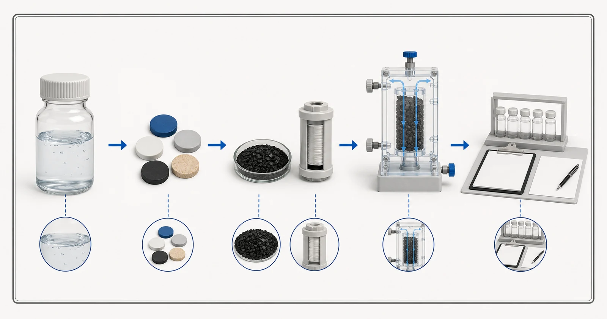

Direct answer
Activated carbon can be part of a PFAS treatment strategy, but the phrase PFAS covers many compounds and no generic carbon claim is sufficient. Evidence must identify the PFAS compounds tested, inlet concentrations, water matrix, carbon and finished construction, flow or contact conditions, sampling schedule and endpoint. Longer- and shorter-chain compounds can behave differently, while natural organic matter and other constituents can compete for adsorption sites. For household products, buyers should verify the exact certified product and reduction claim and follow its maintenance instructions. For industrial systems, water analysis, pilot or application evidence, breakthrough monitoring and a replacement plan are central to the review.

- Named PFAS and influent concentrations
- Water matrix and competing substances
- Identified media or construction
- Test conditions and endpoints
- Field monitoring evidence
Conceptual illustration. Not test results, product certification or an engineering drawing.
Start with the buyer's problem
A buyer may receive a statement that a carbon is suitable for PFAS without seeing which compounds were included. That is not enough to compare products. PFOA, PFOS and shorter-chain substances should not be collapsed into one assumed response. The source water also matters: a clean laboratory challenge does not automatically predict performance in groundwater, municipal water or an industrial stream containing organic matter and other competitors.
The evidence path differs between a certified point-of-use device and a custom industrial bed. A certification is tied to a listed product, standard, test conditions and claim. It should not be transferred to another cartridge or to bulk media. An industrial project may instead use media testing, modeling, pilot work and a monitored lead-lag system. The page and quotation must identify which path supports the recommendation and which questions remain open.
What report and operating data are required
PFAS review needs compound-specific analytical data and careful sample context. Use an appropriate laboratory method and identify non-detect reporting limits rather than sending only a total or marketing label.
- PFAS analyte list, result for each compound, reporting limit and sampling date
- water source, sample location and any treatment before sampling
- TOC or dissolved organic carbon and relevant competing constituents
- pH, temperature, turbidity and suspended solids
- average and peak flow, daily runtime and expected demand variation
- proposed carbon media, cartridge or vessel construction and lot evidence
- target outlet level, monitoring method and analytical turnaround
- replacement trigger, maintenance instructions and spent-media handling plan
A report should be recent enough to represent the proposed source and should identify the sample date and location. If the water changes by season, production batch or operating state, provide the range rather than one convenient result. State the required treated-water objective separately from the current analysis. When a value is unknown, mark it as unknown; a visible gap is safer than a guessed number.
Hydraulic information belongs beside chemistry. Average flow alone can hide short peak conditions, intermittent duty and long stagnation. Confirm daily runtime, peak demand, available pressure, allowable pressure loss, equipment dimensions and who will monitor and replace the carbon. These details decide whether an otherwise plausible media can be used in a serviceable system.
Selection logic
First define the claim. It may be reduction of named PFAS in a listed household product, or control of named PFAS to a project target in a larger system. Confirm the applicable evidence for that claim rather than citing a general statement about activated carbon. EPA information notes that treatment depends on carbon type, bed depth, flow, the specific PFAS, temperature, organic matter and other constituents; those variables belong in the project review.
Second, read the test conditions. Compare the challenge water with the proposed source, and confirm whether the evidence reports early samples only or follows the system toward breakthrough. A high initial reduction does not establish the full service interval. The review should record treated volume, contact conditions, compound-specific results and the endpoint used to stop the test or replace the media.
Third, confirm maintenance and verification. A filter that is not replaced as required can no longer be assumed to perform as tested. Industrial systems need accessible sampling, an analytical schedule and an action plan that accounts for laboratory turnaround. Where a certification is cited, verify the current listing for the exact product and claim; do not rely only on a logo, generic standard number or supplier statement.
Pretreatment, equipment and operating context
Particle control before GAC may be relevant because the adsorption bed should not be treated as an uncontrolled solids filter. Lead-lag vessels can provide operational monitoring and a second barrier, while point-of-use products must be installed and maintained according to their verified instructions. Competing organic matter and changing source conditions can affect replacement planning in both cases.
PFAS management also includes residuals. Captured compounds remain associated with spent media, cartridges or regenerant, so the project needs an appropriate handling path. Yuchen Water can discuss carbon materials, cartridges, vessels and related equipment support, but site-specific waste, regulatory and final process decisions require the responsible project parties and current requirements.
Common mistakes
- Using PFAS as if it were one compound with one adsorption response
- Transferring a certification from one listed product to another cartridge or bulk media
- Reporting initial reduction as the service life of the system
- Ignoring organic competition, shorter-chain compounds and analytical limits
- Providing no maintenance or breakthrough-monitoring plan
Evidence and service boundary
Yuchen Water does not publish a blanket PFAS reduction percentage, capacity or life claim for all activated-carbon products. Any supplied report applies only to the identified sample, construction and conditions. A buyer requesting a PFAS solution should submit compound-specific data and the intended system duty so the available evidence can be matched without overextension.
The technical output may recommend further laboratory work, pilot testing, a different treatment category or a combined process. That is a valid outcome when the evidence is incomplete. The objective is not to force activated carbon into every PFAS project; it is to define a supportable material and equipment direction with monitoring and service controls.
Yuchen Water reviews the target and evidence first, then identifies the appropriate carbon format and material questions, supporting pretreatment and equipment needs, and the documents or tests still required. The output can be a preliminary direction, a request for missing information, or a supportable material and equipment recommendation. A recommendation is not released simply because a buyer supplied a product name.
After supply, technical support can cover document confirmation, installation and flushing questions, remote commissioning guidance, monitoring points and replacement planning within the agreed scope. Actual performance still depends on the approved material, complete equipment, source water, installation, operation and maintenance. Published guidance cannot replace the project review.
No final material, capacity, service life, removal percentage or project result is promised before the report, construction, evidence and operating conditions are reviewed.
Official technical sources
These sources explain treatment principles or certification boundaries. They do not certify Yuchen Water products and do not replace project-specific evidence.
Related activated-carbon guidance
Continue through the knowledge cluster, review selected sample evidence only within its stated limits, compare product formats, or submit the report for a technical review.